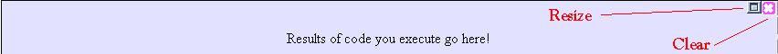
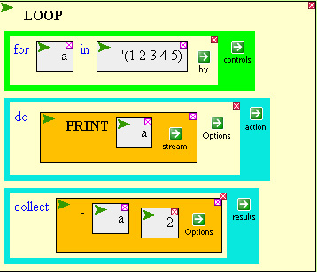
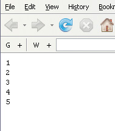
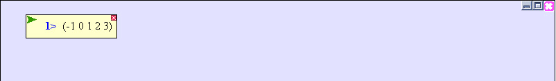
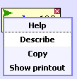
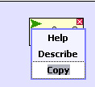
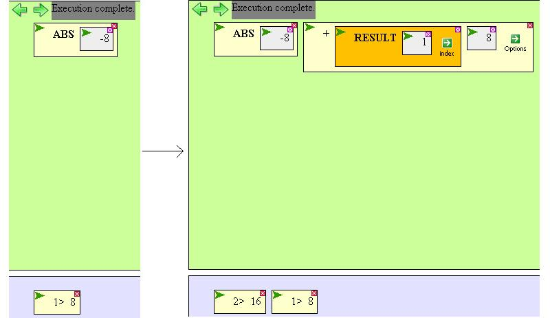

The Results Area

The results of whatever you execute in the workspace
show up in the Results Area.
Like the workspace, it can be easily cleared and resized. The only difference
is that clicking the clear icon clears all the results EXCEPT
for the most recent one...clicking the clear icon again
will clear away that one.
Executing this piece of code

will print the numbers 1 to 5 in a separate popup:

but its return value -- ie, what gets put into the results area --
will be the list (-1 0 1 2 3), subtracting 2 from each number in the original list:

The numbered prompts in each result box indicate the order the results appeared.
Blue prompts indicate the function printed something. To view
the printout, select 'Show printout' from the result box's pulldown menu.
To get more information about a result, choose 'Describe' from the
result box's pulldown menu.

Result boxes can be copied from the results area
and pasted into the workspace, but not cut.

To easily use the result of an execution in another function, use the
RESULT function found in the "OTHER-COMMANDS" palette menu.
